Canvas Agent Bench
For an agent editing a visual document, a tool that measures for it is worth more than a better model.
The bench hands one agent loop a 2D canvas document and a brief — set this menu so every dish name fills two lines, fix this clipped headline, put this page in dark mode — through one of three tool surfaces: coordinate (move and resize by numbers), relational (place this below that, fit this text to its box) and document-as-code (read and rewrite the JSON). Each run gets either no feedback or a rendered screenshot plus a structured description. Deterministic checks score the result; a pass satisfies every one of them.
A measuring tool beats a bigger model
Each measurement task is a page with twelve or more pieces of text that must fill their space exactly: a title as large as it goes on two lines, a box hugging its text, a timeline spine running exactly as far as its entries. Getting one right means knowing how wide a string set in a given font at a given size is — something a model can only estimate.
The relational surface has fit_text: name the text, its box and the number of lines, and it sets the type as large as it goes. The other two surfaces can reach exactly the same page, but the agent has to pick the font size itself. Here is the same task done by the same model, GPT-5.6 Luna, with no feedback, once each way:
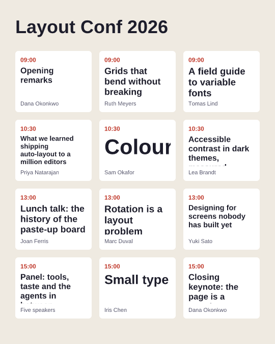
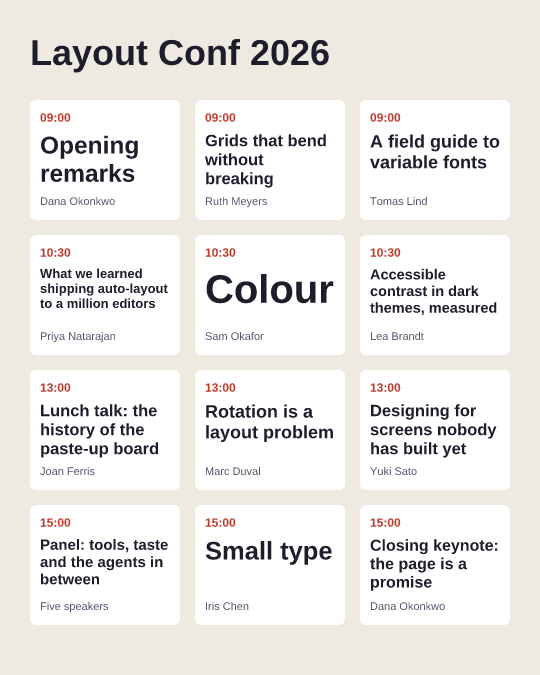
The confirmation ran each of the four tasks on all three surfaces, with and without feedback, three times, on two models: 144 runs, $13.51.
| Model | Relational | Coordinate | Document-as-code |
|---|---|---|---|
| GPT-5.6 Luna — passes | 22 / 24 | 5 / 24 | 0 / 24 |
| GPT-5.6 Luna — cost per pass | $0.018 | $0.13 | $0.37 |
| GPT-5.6 Terra — passes | 22 / 24 | 4 / 24 | 2 / 24 |
| GPT-5.6 Terra — cost per pass | $0.17 | $1.05 | $1.31 |
Cost per pass is a cell's total spend, failed runs included, over its passes, combined across tasks by geometric mean. Both tests were paired within task with a task-clustered bootstrap. Relational's lead in pass rate: +0.71 to +0.92, every interval clear of zero. Its cost per pass: 0.05 to 0.16 times the other surfaces', every interval clear of the 0.85 the pre-registration required.
The failures are near misses — the average score on the losing surfaces is 0.93 to 0.98 — but a page with one clipped title is not done. Seeing the page helps less than you might expect: a screenshot plus a structured description lifted coordinate and document-as-code from 2 to 9 passes out of 48, while the measuring tool got 44. And the bigger model doesn't close the gap either: Terra without fit_text passed less often than Luna with it, at nearly sixty times the cost per pass.
When the model can measure, the tool only changes the cost
Opus 5.5 passes the measurement tasks on every surface: it estimates, checks the feedback and corrects, or reaches for fit_text on its own. There the surface no longer decides whether the page gets made, only what it costs. Under a five-turn budget, coordinate cost 1.39 times as much per pass as relational (interval 1.15–1.66), document-as-code 1.18 times (not resolved).
On twelve other tasks — composing, repairing, restyling and arranging pages, and the animation prototypes — no surface was resolved cheaper in dollars than another (119 runs). The surfaces did differ in shape: document-as-code needed about a quarter of the tool calls, relational took the most turns (5.1, against 3.0 and 3.2), and the totals came out even. Feedback mattered for passing rather than for cost: 88.9% of runs passed with no feedback, 100% with any.
Hard tasks are hard to write
The tasks were built to leave room — a target of about 30% passes on the strongest model — so that differences between surfaces could show. Three rounds of making them harder all ended the same way.
Geometry
Exact gaps, grids, insets and rotations are almost never missed: a strong model computes exact arithmetic exactly. Prototype pages built from shapes and gradients — a sunburst badge, a clock at ten past ten, a Bauhaus study made only of tangencies — were solved even by Luna, the cheapest model tested. Nine of its twelve misses there were the same constraint: a title set as large as it goes on one line. That pointed to measurement.
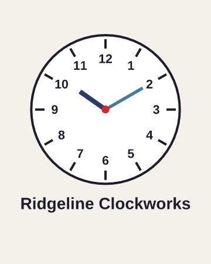
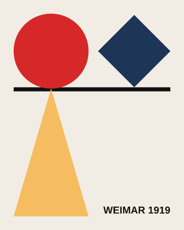
Measurement
So the hardest family was built around text the agent must measure without seeing it. It separates the surfaces on every model below the frontier, as above. Opus 5.5 passed all 24 pilot runs anyway.
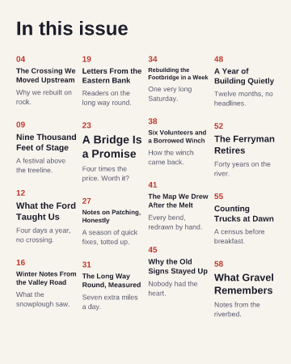
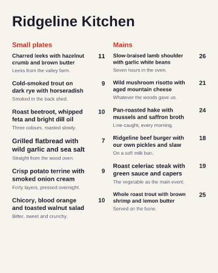
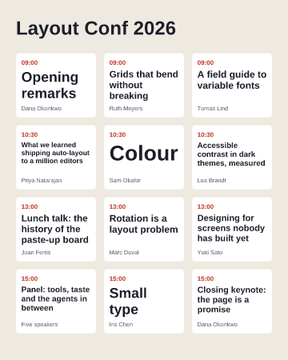
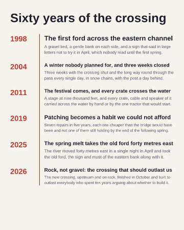
Motion
Then time. Elements gained an entrance animation, fade or fly in, and the checks sample the frames in between: nothing may cover text mid-flight, a button's label must stay inside the button, and everything must be at rest by a deadline. The three prototypes are built so that the obvious plan fails — half the sides an element could fly in from sweep it across text, and reading order drops each card onto the title of the one before.
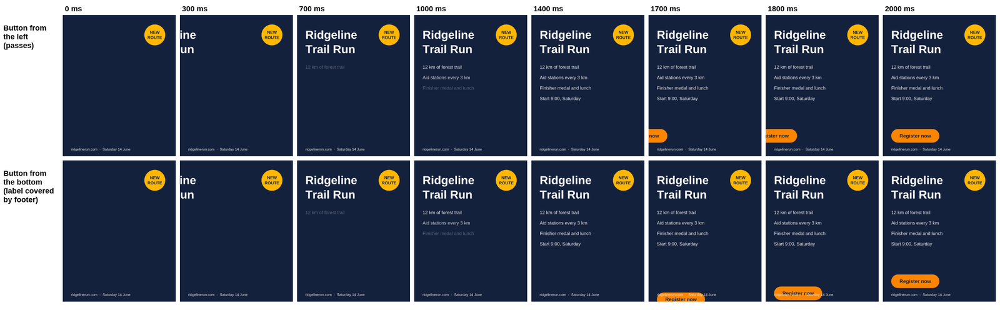
Opus 5.5, Sonnet 5.5 and Luna each passed all 18 runs. Models plan motion they cannot see as reliably as they compute geometry.
Writing tasks until the newest frontier model fails means writing tasks to defeat the model, not tasks people actually do. The useful signal is lower down: which tools let a cheaper model do what only the frontier does unaided.
Lessons for anyone designing agent tools
Give the agent a measuring tool
Anything the agent would otherwise have to estimate — text widths, line breaks, what fits — is worth a tool that computes it. It is the largest effect the bench found, larger than feedback and larger than a model step. Screenshots don't replace it: an agent that can see a title is clipped still has to guess the size that fixes it.
A missing tool looks like a weak model
The coordinate and relational surfaces once had no tool for the canvas background. Asked for dark mode, the agent noticed (“there's no tool to set the canvas background directly”) and painted a full-canvas dark rectangle. The page looks identical; it scored 56% instead of 100%, and a surface comparison would have blamed the vocabulary rather than the missing verb.
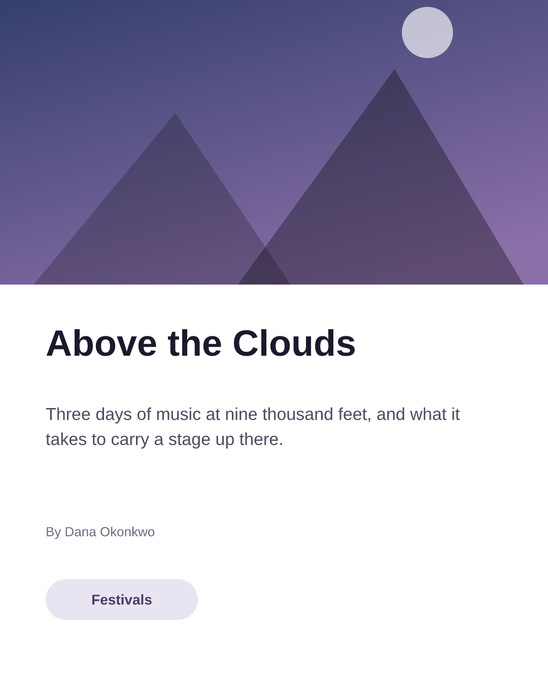
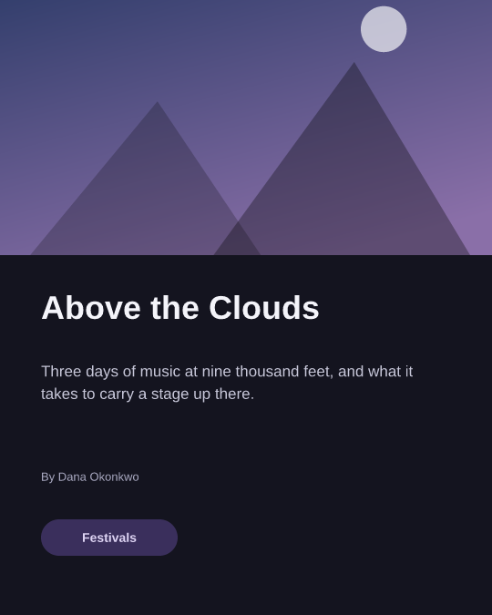
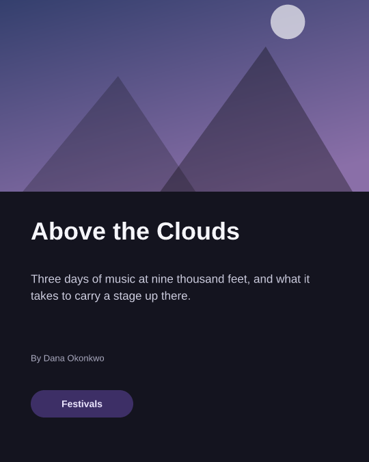
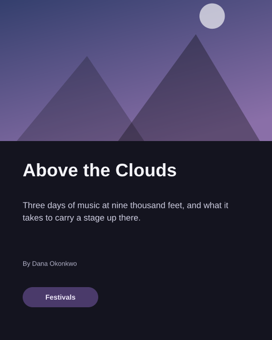
An agent that can't edit will rebuild
The relational surface once could size an element only when creating it. To fix a clipped headline, the agent deleted the headline and paragraph and made new ones. The page looks fine, but anything that tracks elements by identity — comments, links, history, here the checks — sees two elements gone. It scored 5%. Every surface now reaches the same set of documents, and a test proves it for each.
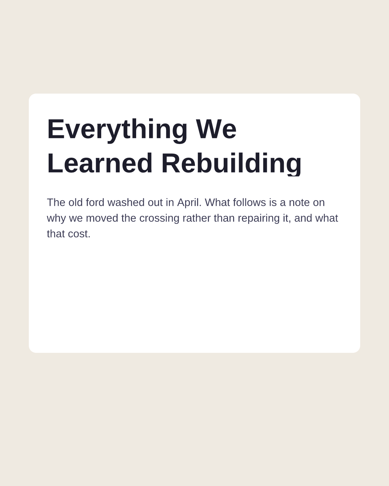
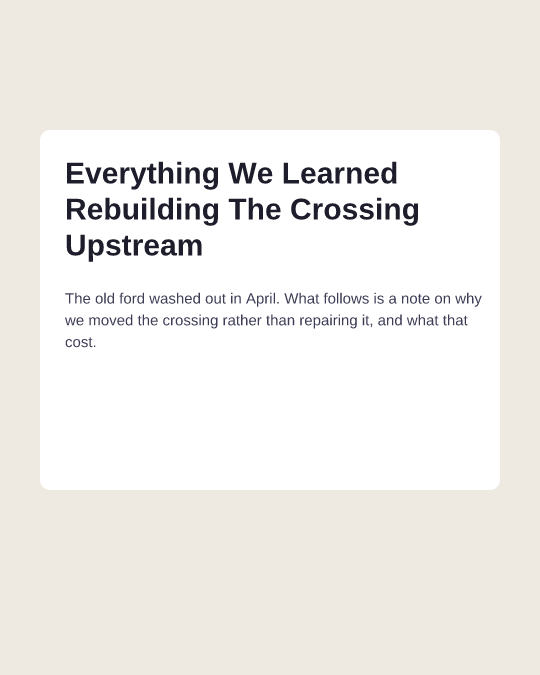
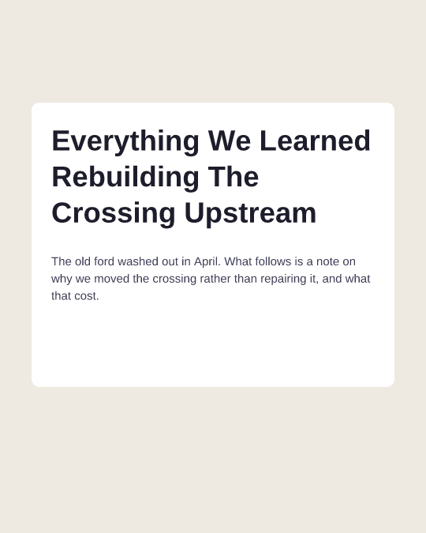
A budget is never neutral
A cap on tool calls penalises the surface that works in many small calls; a cap on turns penalises the one that checks its work between steps. Under a five-turn budget, relational on the GPT models fell from 15 of 16 passes to 4 of 16, because measuring and then checking takes turns. Decide which you are pricing before you cap it.
A cheap way to satisfy a check is a bug in the check
Shrink the type until it fits. Fade the shape covering the text. Carry the missing copy in a text element at opacity: 0. Each of these once satisfied a task without doing what its brief asked. Every one now has a test asserting it scores below the honest fix, and the honest fix has to reach 100%. Checks read glyph ink from the font rather than line boxes, and overlap is measured as hidden ink rather than raw area, because a headline sitting on a card is good design, not a defect.
Try it
The live page lets you type a brief, watch the agent build it, and switch the tool surface mid-run: the document and conversation carry over, only the vocabulary changes. It runs a recorded replay without an API key. Six providers work through one agent loop on the Vercel AI SDK.
The surfaces are also published over WebMCP, screenshots included, so any WebMCP agent or eval harness can drive the canvas with no code from this repository in the loop.
npm install && npm run serve, then open localhost:5173. The README covers sweeps, cost estimates and the WebMCP host.